One idea from real systems, drawn simply, a few minutes at a time. System design from things I've built and broken at Amazon, Nissan and Microsoft; AI agents from how I use and build them every day; and what changes when AI runs at scale.
Systems on Glass is an AI-automation side project of mine. Every episode is generated by Claude (Anthropic's AI, working through Claude Code in my own video studio): the script, the animations and 3D scenes, the edit, and the narration in an AI clone of my voice. I choose the topics, bring the stories from my own work, and review each episode before it goes up. Not affiliated with Anthropic.
A curriculum, not a pile of tips. Each track gets harder week by week, so starting at episode one feels like levelling up: one server, then many servers, then servers that disagree; using agents, then making them yours, then building and trusting them.
Every episode: a real story with a number, the obvious answer crossed out, the real pattern drawn step by step, and one rule to keep.
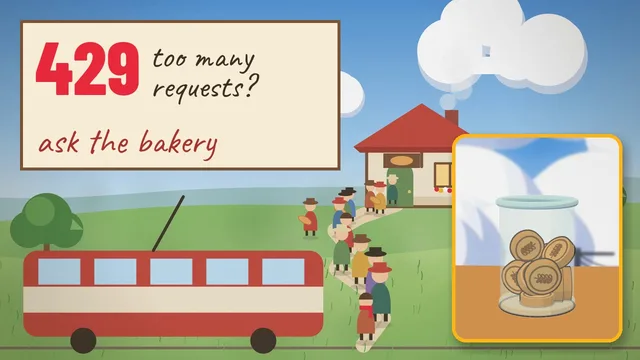
Rate limiting, told by a painted hillside bakery: a jar of ten tokens lets the 9 o'clock rush in, serves the rest at a steady pace, seats who can wait, and says "back at ten" (429) instead of falling over.
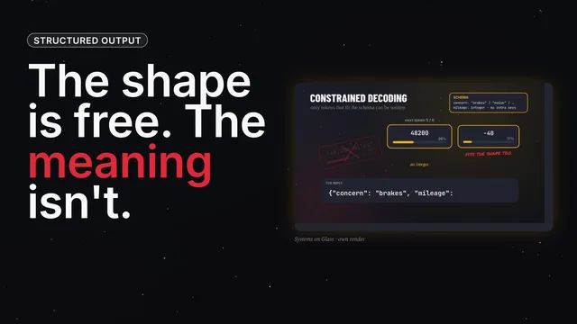
Structured outputs force the JSON's shape, so the reply always parses. But {"mileage": -40} fits the shape too. Schema, validate, retry once with the error, fail loud.
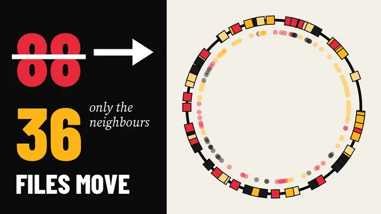
Four laptops, 120 files, one more laptop: hash mod n moves 88 of them. Consistent hashing puts files and machines on a ring, so only the newcomer's neighbours give up files: 36, all to the new laptop.
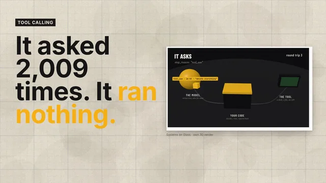
The AI behind this series asked to use a tool 2,009 times in five days and ran none of them. How tool calling works: it asks, your code runs it, the result goes back by id, and your code makes the rules.
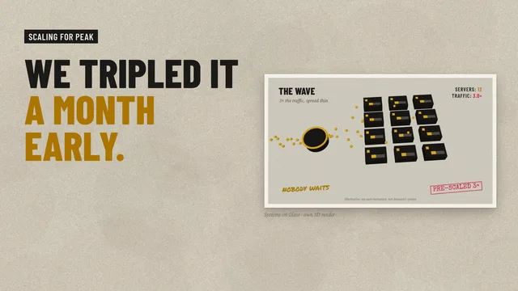
A month before Prime Day, we tripled everything: a load balancer at the door, a forecast, servers pre-scaled and warmed days early, autoscaling on top, and the plan's last line, scale back down.
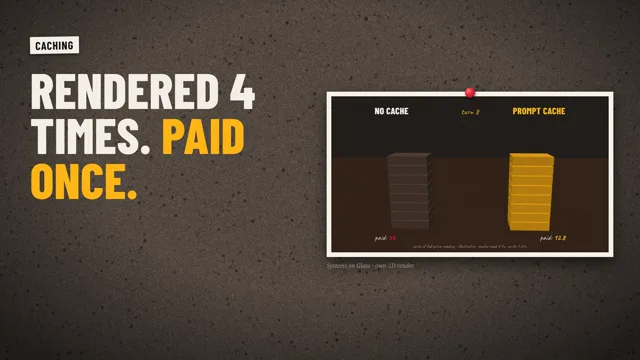
Rendered four times, paid once: an investigation into the two caches that make AI cheap, the response cache and the prompt cache, and the one changed word and the five-minute clock that break them.
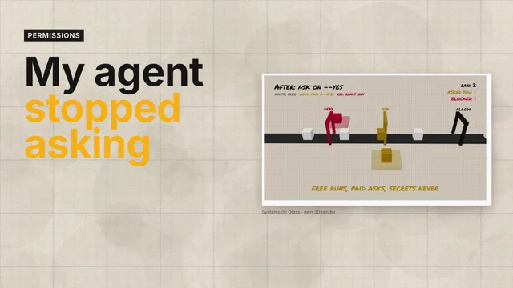
Allow the boring, ask for the money, deny the secrets: my studio's 46 allow rules, the hole I found in them (a free rule that matched a paid step), why order fixes it, and real walls in a sandbox.
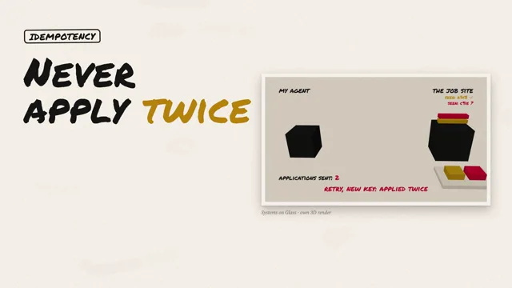
My job agent crashed mid-submit: did it apply? A key for every action, the intent written before the work, keying the thing not the message, the IETF Idempotency-Key draft and Stripe's saved answers.
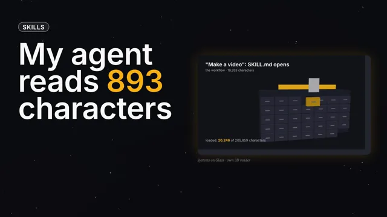
My agent carries 206,000 characters of how-to and reads 893 at startup. How skills load in three levels (the label, the steps, the tools), why the description is the trigger, the open standard, and the catch.
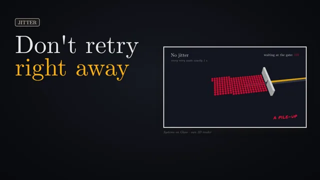
When everything fails at once, don't retry right away: how retries multiply, AWS's October 2025 congestive collapse, backoff, full jitter (now the default in every AWS SDK), retry quotas, and dead letters.
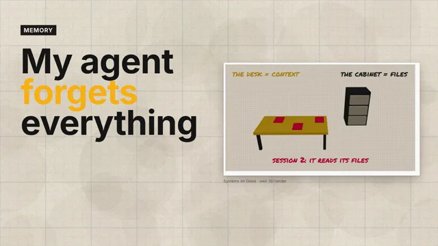
My agent ran out of memory mid-episode and kept going. The four kinds of agent memory, CLAUDE.md, corrections that become rules, notes the agent keeps, skills opened just in time, and the 200-line catch.
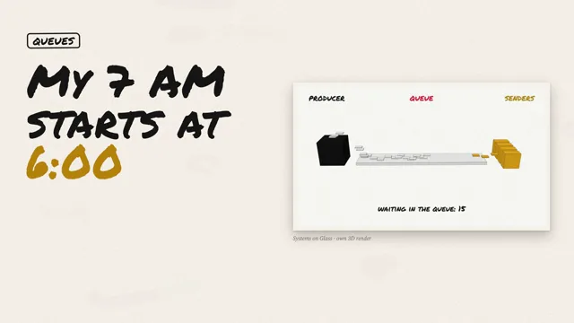
Why my 7 AM starts at 6:00: freeze the list before you fire, pace under the provider's limit with a token bucket, add lanes for speed and isolation, and give failures somewhere to go.
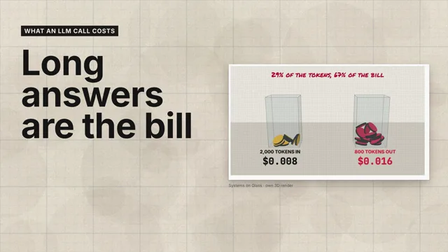
Two meters, output at five times input, a receipt for one call, why an agent's bill is mostly re-reading the conversation, and four ways to pay less: cache, batch, smaller models, shorter answers.
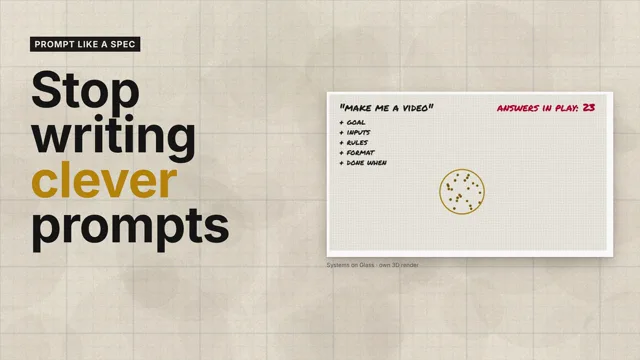
Why the best prompt isn't clever: vague prompts and literal models, the five parts of a spec (goal and why, inputs, rules, output, done when), my own studio's rules, and the tools built on the idea: Spec Kit, Kiro and AGENTS.md.
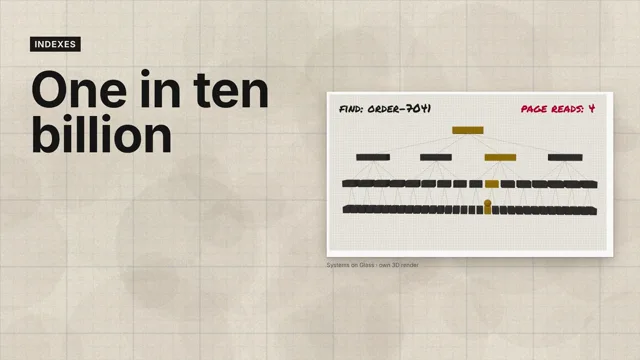
How to find one thing in ten billion without reading them: the book index, binary search, the B-tree's four page reads, hash, inverted, vector and LSM indexes, what every index costs, and the point lookups behind my Amazon Ads API.
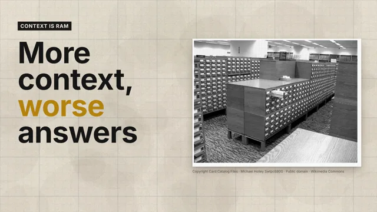
Why a bigger window can make your AI agent worse: lost in the middle, context rot, what Anthropic, OpenAI, Google, xAI and Microsoft Research say, and the four memory moves: load late, compact, write it down, fork.
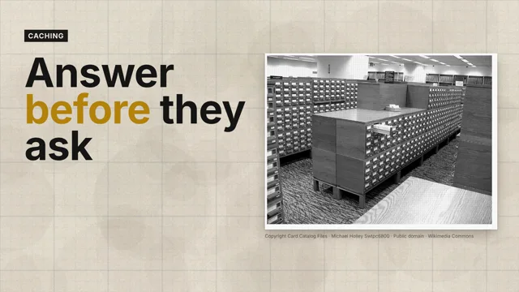
How seventeen calls an ad got cheap: hits and misses, read- and write-through, lazy versus eager, LRU to learned eviction, invalidation and the herd. Then caching for AI: the KV cache, prompt caching and response caching.
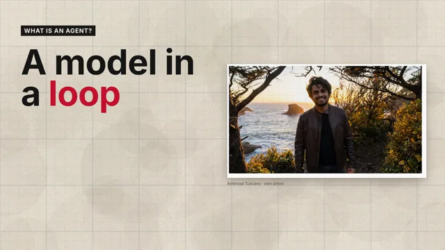
An agent isn't a smarter chatbot: it's a model in a loop. Think, act with a tool, observe, check, repeat; tools as the hands; and the goal, budget and human that stop it running forever.
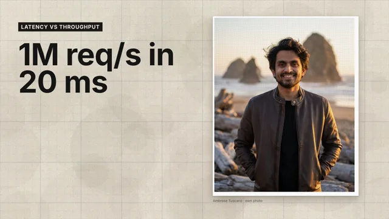
How an API answers a million requests a second, each in under 20 ms. Two problems, two fixes, Little's law, why busy servers get slow, Prime Day headroom, and why averages lie.
Next up: Let code decide (AI agents), then Batch it (AI at scale).